Titre : La Traque
Vue : vue de dessus
Plateform : Console de salon -> NES (Famicom)
Nombre de joueurs : solo et multijoueurs (Jusqu’à 4)
Cible : adolescents // Midcore
Ajout d’équipe “Bleu”, “Rouge”, “Jaune”, “Violet”. En fonction du nombre d'équipes, le maximum de pisteur varie (plus le nombre d'équipes est faible, plus le nombre de pisteurs est élevé). Le nombre de pisteur en partie solo reste sur un maximum de 10. Par contre, le maximimu de pisteur par équipe est de 5. En fonction du nombre d'équipe, il est donc possible d'être dans une tranche allant de 2 à 20 pisteurs.
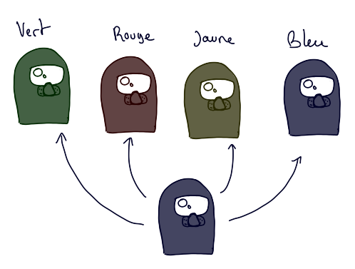En présence d’un minimum de deux équipes, un timer s’ajoute pour rendre la partie plus dynamique, mais aussi pour complexifier la tâche aux joueurs.
Il est possible de jouer en totale coopération jusqu’au chacun pour soi.
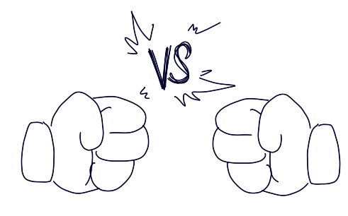 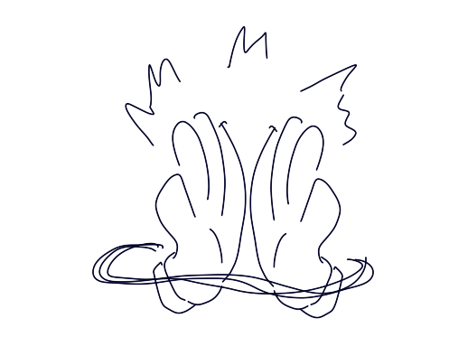NOTE : Cette ajout peut très bien être ajouté au support de base du jeu. Sans prendre en considération les modfocation de jouabilité avec la manette.
Rendre le jeu plus coopératif et/ou plus compétitif. Ajouter de l'interaction entre joueurs, au lieu de ne déplacer qu’un seul pisteur par personne. Cela peut limiter le nombre de joueurs jusqu’à quatre personnes, mais au lieu de partager un clavier, chaque joueur aura sa manette.
Utilisation d'une manette. (1) Bouton "Start" : permet de passer l'introduction du jeu pour acceder au menu principal du jeu. Permet aussi de passer des dialogues et tutoriels ; (2) Bouton "Select" : permet de mettre en pause une partie en court, il est aussi possible d'acceder à un second menu ; (3) Flèches directionnelles : permet de selectionner une option, un emplacement sur la case ou une action de pisteurs ; (4) Bouton B : Permet d'annuler ou de faire un retour arrière quand cela est possible ; (5) Bouton A : Permet de valider une option, un emplacement ou une action de pisteur, voir aussi un dialogue (si présent).
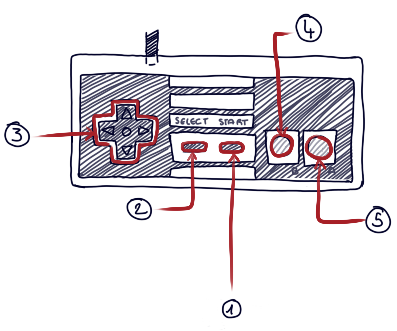Les pisteurs auront un design simple à identifier. Leur représentation sur les schémas n'est pas définitif.
Avec l'ajout d'équipes, les pisteurs auront aussi de nouvelles interactions. En fonction de la partie jouée, si elle est coopérative ou compétitive, les pisteur pourront s'entre-aider ou s'affronter.
Mais reprenons avec les actions de base : l'observation, qui permet le signalement d'empreintes ou du monstre lui-même. Si celui-ci est repéré, alors le pisteur à la possibilité de lui tirer dessus.
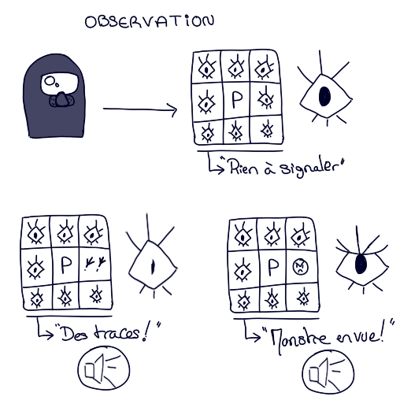 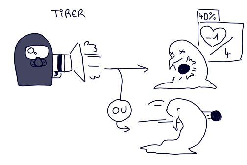S'ajoute donc trois autres action destinées aux autres pisteurs, elles ne s'afficheront pas s'il n'y a pas d'adversaire ou en présence du monstre. De le cas où il y aurait un pisteurs adverse et le monstre, celui-ci ne sera repéré uniquement si le joueur décide d'observer autour de lui. Les pisteurs sont par défaut visible contrairement à Monk C, il n'est donc pas nécessaire "d'observer" pour attaquer ou defendre un autre pisteur. Par contre, il est obligatoire qu'il soit autour du pisteur du joueur pour être dans sa ligne de porté.
"Geler" : le pisteur adverse ne pourra ni se déplacer ou être deplacer, ni observer et il ne pourra pas être manger par Monk C. Cela dure pendant deux tours. Le joueur pourra réfaire cette action trois tours après utilisation. Ne prend effet que si la cible est situer en face et non dans les diagonales du pisteur du joueur. Monk C ne le considère plus, il n'attendra ps devant la glace.
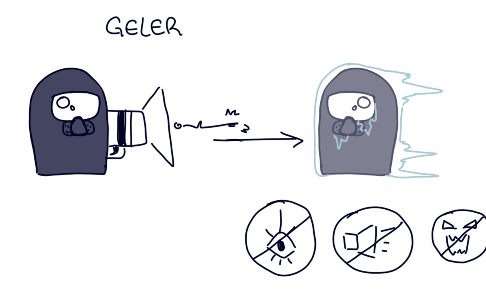"Assomer" : le pisteur adverse ne pourra ni se déplacer, ni observer. Par contre, il pourra être déplacer par un autre joueur ou être dévorer par Monk C. Cela dure pendant trois de tours. Le joueur pourra refaire cette action deux tours après utilisation. Ne prend effet que si la cible est dans une case voisine du pisteur du joueur, en face ou en diagonale.
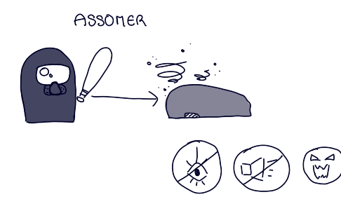"Pousser" : le pisteur adverse se fera déplacer par le joueur dans une case de face de son propre pisteur. Cette action peut permettre d'approcher ou d'éloigner la cible de Monk C. Cela ne prend pas effet si le pisteur ciblé est gelé. Il est aussi impossible de déplacer la cible dans dans les diagonales.
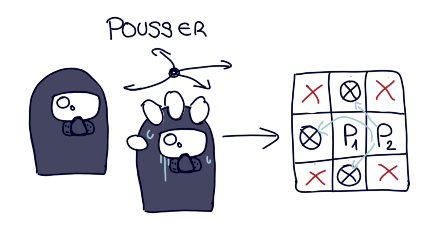Modification de la map pour qu'elle soit légèrement plus grande avec une bordure graphique. Avec des ajout d'un minimum de cinq à sept obstacles placé aléatoirements.
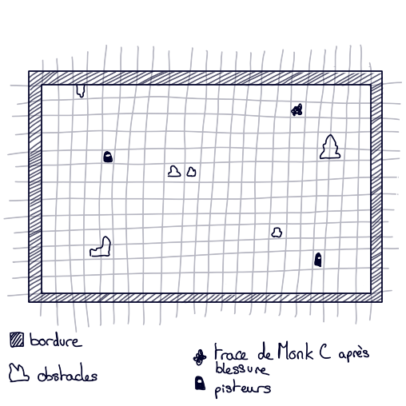Titre : La Traque
Vue : vue désincarné
Plateform : support du jeu de base avec interface en SDL
Nombre de joueurs : 1 à 10 (possibilité d'aller jusqu'à un joueur par pisteur)
Cible : adolescents - jeune adulte // Midcore
Ajout d'un environnement dit extrême. Dans le cas de cette exemple, il s'agirait de hauteures montagneuses enneigées.
Cet environnement permet d'y placer des événements météorologiques. Des éléments "cachés". De plus s'ajoute des danger tel qu'une avalanche (que pourrait provoquer Monk C avec sont cri) ou le température elle-même.
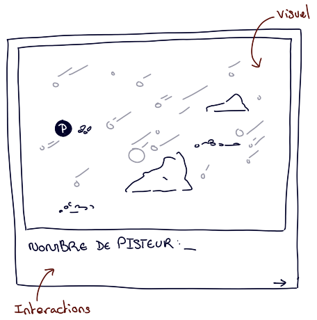Cette fois-ci, l'intention se porte sur une réfléxion plus poussé sur l'environnement qui nous entour. Les aléas peuvent se révéler plus imprévisibles et surtout plus dangereux. Il y a donc plusieurs chose à prendre en compte pour atteindre l'objectif donné. En prenant aussi conscience que l'adversaire peut prendre l'avantage de par ses connaissances de son propre habitat !
Pour les pisteurs s'ajoute en plus de leur vie unique, une jauge de résistance. Si la jauge est vide, le pisteur gelé est considéré comme mort. Donc si une partie des pisteurs est dévorée par Monk et le reste hors-jeu, la partie prend fin. Par contre, il est possible de dégeler un pisteur par l'intermédiaire d'un autre pisteur, ce qui coûte une action de déplacement pour celui qui vient en aide. La jauge reste stable ou augmente un peu en fonction du nombre de pas fait par le pisteur.Un pisteur gelé est automatiquement ignoré par Monk C.
Les pisteurs auront aussi une action supplémentaire appelé "aide". Celle-ci s'activera si le pisteur aura dans une case voisine un autre pisteur en dificulté : celui-ci peut être gelé, coincé sous une avalanche ou bloqué dans une crevasse.
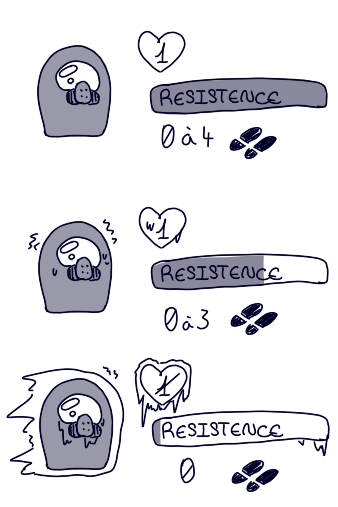Les aléas météorologiques tel que "ciel clair" qui ne donne aucun malus et arrive comme un tour plus calme pour les pisteurs. "Tombé de neige" diminue un peu la température ce qui baisse légèrement la résistance des pisteurs. Cela recouvre diminue un peu le temps de présence des empreintes de Monk C. "Tempête de neige" réduit d'un pas la capacité de mouvement des pisteurs, diminue la température ce qui baisse plus la résistance des pisteurs. Cela diminue encore plus le temps de présence d'empreinte de Monk C. Peut également recouvrir/créer des crevasses.
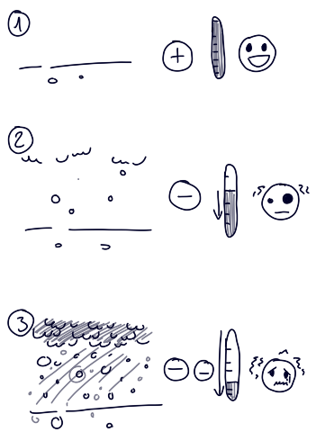Présence d'éléments cachés ou "d'amas de neige" qui peuvent camoufler suite à une tempête de neige une crevasse, une plaque gelée qui fera glisser le pisteur dans une case voisine aléatoire, un camarade pisteur qui s'est fait surprendre par une avalanche (les pisteurs dans ce cas ont le même statut qu'un pisteur geler), ou ne rien dissimuler du tout. Pour enclencher ce qui s'y trouve, le pisteur ou Monk C doit s'y placer dessus.
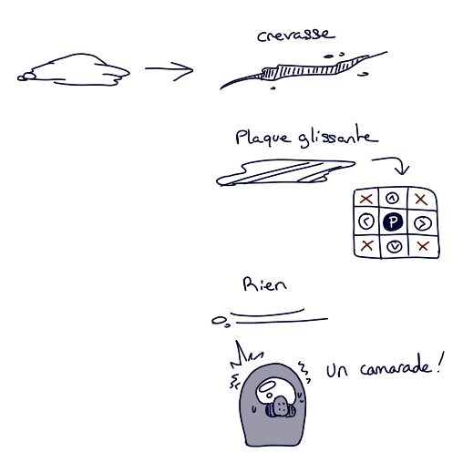Monk C reste invisible à l'œil du joueur ! Mais celui-ci peut se faire entendre s'il est dans un certain rayon des pisteurs. Il pourra aussi jouer d'astuce est se rapprocher d'un groupe d’adversaires qu'il considère trop proche et pousser un hurlement pour déclencher une avalanche. Il s'enfuira et ralentira ainsi les pisteurs. Note : il y à 40% de chance qu'un pisteur se fasse ensevelir par la neige.
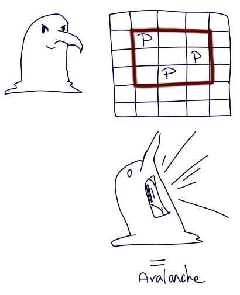